パリの南東郊外55kmに位置する町Fontainebleauフォンテーヌブロー。そしてその町に構えるのがフォンテーヌブロー宮殿。フランスでも最も大きな宮殿の一つとされ、1981年にユネスコ世界遺産にも登録されています。今日ある宮殿の姿は多くのフランス君主による築城の成果であり、その始まりは16世紀初頭のフランソワ1世にさかのぼります。
パリからはGare de Lyon〈リヨン駅）から電車が出ており約45分ほどでFontainebleau‐Avon駅へ、そしてそこからはフォンテーヌブロー宮殿行きバスで15分。詳しくはページ下のフォーンテーヌブロー市オフィシャルサイトにて詳細＋地図が載っています。
フォンテーヌブロー宮殿の歴史
1169年： フォンテーヌ・ベル・オー（Fontaine Belle Eau）あるいはフォンテーヌ・ブロー（Fontaine Belleau）と名前が残されている。
12世紀後半： この敷地にあった古い城はすでにルイ7世（1120‐1180）よって利用されており、カンタベリ大主教であったトマス・ベケット（Thomas Becket）が彼のために礼拝堂を捧げている。
13世紀： またこのフォンテーヌブロー城はフィリップ2世（フィリップオーギュスト1165 ‐1223）やルイ9世（1214‐1270）のお気に入りの城でもあった。
14世： フィリップ4世〈端麗王1268‐1314）がフォーンテーヌブロー城にて誕生。逝去もこの城にて。
15世紀~16世紀： フランソワ1世（1494‐1547）により現在のような建物へと造りかえられていきます。フランソワ1世のもと、Gilles le Bretonという建築家が南門Porte Doree（黄金の門）を含むCour Ovale（楕円宮廷）のほとんどを建築。また王は建築家のSebastiano Serlioをフランスに招き、Leonardo da Vinci（レオナルド・ダ・ヴィンチ）も呼び寄せている。Rosso Fiorentinoによるフレスコでフランソワ1世のギャラリーは飾られ、これがフランスで建てられた一番最初の装飾ギャラリーとなった。
大まかに言うと、このフォンテーヌブローでルネッサンスがフランスへと流れ込んできます。
16世紀前半~中期： アンリ2世（1519 ‐1559）の治世において、Salle des Fetes（祝祭の広間）がイタリアのマニエリスム画家Francesco PrimaticcioとNiccolo dell’Abbatteによって装飾されます。「フォンテーヌブローのニンフ〈妖精）」は、宮殿装飾のために作られましたが、現在はルーブルにあるそうです。さらにアンリ2世とCatherine de Medici（カトリーヌ・ド・メディシス）により拡張建築がなされます。アンリ3世（1551‐1589）フォンテーヌ城にて誕生。
16世紀後半~17世紀前半： このフランソワ1世からアンリ2世までに築かれてきた城にアンリ4世（1553‐1610）は中庭を付け加え、名をCour des Princes（王の中庭）としました。その庭にはGalerie de Diane de Poitiers（ディアーヌ・ド・ポワチエのギャラリー）や Galerie des Cerfs（雄鹿のギャラリー）が設置され図書室として利用され、さらに木々で覆われた庭園に1200ｍの水路を設け、松やエルムの木、果樹などを植えるように命令します。ルイ13世（1601‐1643）フォンテーヌ城にて誕生。
1685年： ルイ14世により「フォンテーヌブローの勅令」発令。これによりナントの勅令が破棄されることになります。ナントの勅令とは、1598年アンリ4世によるもので、プロテスタント〈ユグノー）などに対してカトリックと同じ権利を与えるという勅令。
18世紀後半： 城の不運が始まる。フランス革命期に多くの調度品が売りに出される。国民のための資金を調達する目的と、ブルボン家が二度と贅沢な生活に戻れないようにするためである。しかしながら、10年も経たないうちにナポレオン・ボナパルトがこの城を彼の力のシンボルとして利用するようになります。荷馬車が通れるよう石畳のエントランスに作り変えさせたりこの城の修正を図り、ナポレオンによって現在我々が目にする宮殿が完成されます。
1814年： フォンテーヌブロー宮殿にてナポレオンが親衛隊に別れの挨拶をし亡命する。
こうして見てみるとさまざまな王たちがここフォンテーヌブロー宮殿で過ごしてきた様子が分かります。では、ここから中の様子を。
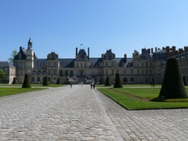
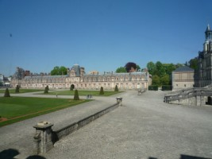
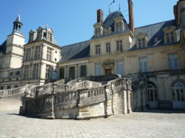
まず門をくぐり敷地内に入るとお城までの石畳の道が続きます。ここがナポレオンが近衛兵と別れを告げた「別離の中庭」。ナポレオンはエルバ島へ流されます。
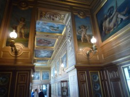
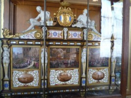
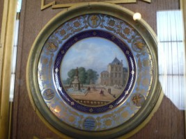
横を見ても上を見ても隙間のないくらいの装飾です。こちらは「皿の間」と呼ばれ皿絵で飾られています。一枚一枚よーく見てみましょう。セーブル陶器博物館でも同じものを見ました。
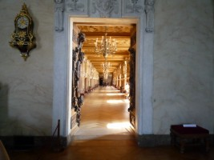
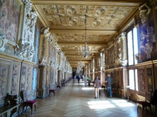
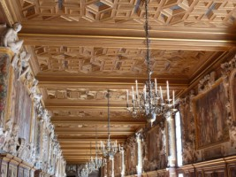
扉の向こうに見える奥行きに圧倒されます。
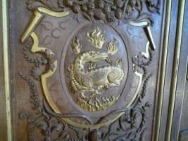
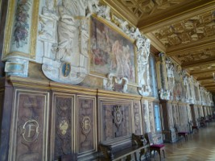
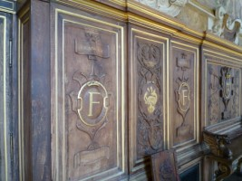
「フランソワ1世の回廊」。壁にはフランソワ1世の紋章サラマンダーとイニシャルFの文字が見えます。サラマンダーとは、《苦難に負けずに貫き通される信仰や熱情にとらわれない貞節、善なる火を燃え上がらせ悪なる火を消し去る正義を表す》とされています。
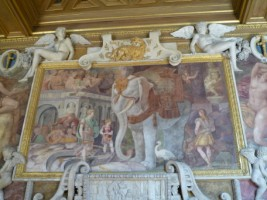
そしてこちら、「フランソワ1世の回廊」にあった絵。人が集まって話していたのを横で聞いていたところ、この白い像は力と知恵の象徴で足元のコウノトリが国王の母への敬意を表しているんだとか。一つ一つちゃんと意味があるんですね。フランソワ1世がイタリアから呼び寄せた画家ロッソ・フィオレンティーノ(Rosso Fiorentino）のフレスコ画だそうです。

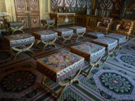
「皇后の寝室」〈左と中央）。歴代の王妃や皇后の寝室として使われてきたそうです。
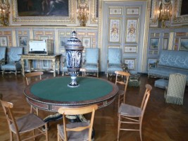
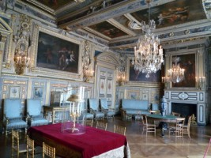
「ルイ13世の間」（右）。ルイ13世がフォンテーヌ宮で誕生。父アンリ4世がその誕生を祝って豪華に改装したんだそうです。テーブルの上にはセーブル焼きの壺、そしてそのテーブルにも工夫がしてあり座る人ごとに各引き出しが付いています。
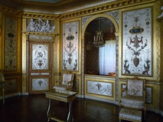
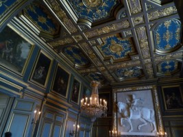
次から次へと豪華な部屋が現れます。左写真は「マリーアントワネットの小部屋」。フォーンテーヌブローはもともと王たちの狩猟を楽しむ場所として城が建てられました。ルイ16世ももちろん毎年ここへ猟をするためにやってきたことでしょう。しかしこの時代には城の老朽化が進み、王の間が拡張され、王妃の小部屋が改装されることになりました。改装後はマリーアントワネット好みの装飾に変えられ、部屋にある家具も彼女用にデザインされたものです。「皇后の寝室」にあるベッドもマリーアントワネットのために作られたものです。右写真は「王の控え室」。
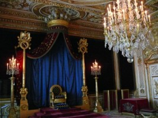
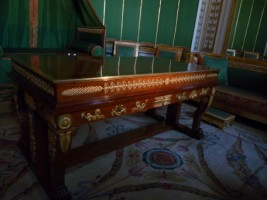
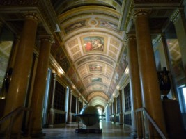
「ナポレオン王座の間」（左写真）。ナポレオンがここに座っていたんですねえ。両端のポールの上にナポレオンのイニシャルＮが見えます。そして中央写真は「ナポレオンの小部屋」と呼ばれ、この机でいろんな案を練っていたんでしょうね。机には仕掛けがあり一瞬で書類が隠せるようになっているそうです。ナポレオンはあまり寝ない人だったようで後ろに簡易ベッドが備え付けてあります。右写真はナポレオンが読んだであろう本が収められている「ディアナの回廊」。
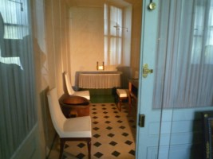
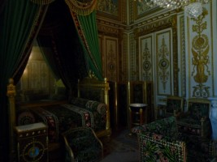

そしてこちらお風呂（左）。ナポレオンはお風呂好きだったとか。「ナポレオンの寝室」〈中央と右）。こちらも落ち着いた緑色で統一されています。ここにおいてある椅子にも工夫がしてあります。暖炉にあたる側は手掛が低くなっており、もう片方は高くなっています。よく温まれるように工夫してあるんですね。
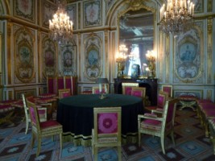
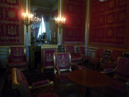
「会議の部屋」（左）。そして赤で統一された「退位の間」（右）はナポレオンが退位するときに書類にサインをした部屋だそうです。

そして途中みつけたおもしろい一品。中央は秒針と分針の付いた普通の時計なのですが、その周りに曜日だの月名だの、うるう年だの、太陽、月の位置だの星座だのといろんなものがくっついています！
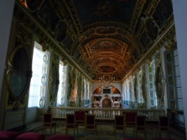
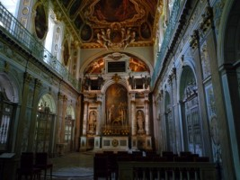
「トリニテ礼拝堂」。左は城に入ってすぐのところで、礼拝堂を見下ろすような感じ。右は下から見上げた様子です。元は聖王ルイが建てた聖堂を三位一体修道会（トリニテ修道会）が引き継ぎました。ここで国王と王妃が毎日ミサに参加していたんですね。
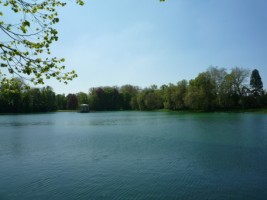

さあ、外に出てちょっと休憩。たくさんの部屋を見終わって、主人と一緒に歴史話。ヴェルサイユ宮殿もそうですがこれだけの財力が一部の選ばれた人間に集中するなんてものすごいことですよね。そんな時代があったからフランス革命につながるのでしょうが。歴代王が居住した宮殿ということで、なんとなく一度にいろんな時代を駆け回ったような一日でした。
さあ またバスと電車でパリに戻ります。ちょっと大変だけれども時間があればぜひ一度。
関連サイト
フォンテーヌブロー市オフィシャルサイト
以上参考ウィキペディア、宮殿内ガイドより